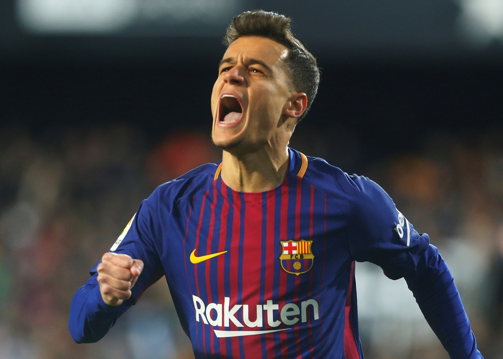

Philippe Coutinho Correia é um futebolista de destaque no cenário do futebol mundial. Nascido no dia 12 de junho de 1992, no Rio de Janeiro, Coutinho teve no Vasco da Gama sua formação como jogador profissional. No time carioca, estreou em 2009, quando já estava vendido para a Inter de Milão. Por conta das regras da FIFA, que não permitem transferências de jogadores menores de idade, o atleta permaneceu no clube cruz-maltino até completar 18 anos de vida.
Apresentou-se ao clube italiano no ano de 2010, já fazendo parte do time principal. Sua estreia aconteceu contra o Atlético de Madrid, na final da Supercopa da UEFA, do mesmo ano. Na ocasião, substituiu Wesley Sneijder, um dos grandes nomes daquela equipe. Depois disso, o meia teve boas oportunidades para mostrar seu talento. Após um bom início, o atleta perdeu espaço e foi emprestado para o Espanyol, da Espanha, em 2012. No mesmo ano, Coutinho se destacou e ganhou o prêmio de revelação do Campeonato Espanhol. No meio da temporada, o jogador voltou ao clube italiano para tentar se fixar no time titular. Porém, seu desempenho não chamou atenção e o clube decidiu vender o meio-campista.
Em 2013, o Liverpool surgiu como interessado no futebol do ”Pequeno Mágico”, como é conhecido, e contratou o jogador para reforçar o elenco dos Reds. O atleta obteve um status de jogador intocável no elenco inglês. As temporadas seguintes tiveram um desempenho espetacular de Coutinho. Mas a temporada de maior destaque aconteceu em 2016. Foram 36 jogos, com 14 gols marcados e nove assistências.
Porém, em 2018, o meia decidiu mudar de ares e se transferir ao Barcelona. Essa decisão revoltou os torcedores do Liverpool, que não entenderam o motivo do jogador ir embora. O novo clube era o Barcelona. Coutinho chegou ao clube usando a camisa 14, homenagem aos ídolos blaugranas Johan Cruyff e Thierry Henry. Assim, entrou com uma responsabilidade gigante nas costas e parece ter sentido. Não conseguiu repetir as boas atuações que teve no Liverpool e amargou o banco de reservas por um bom tempo.